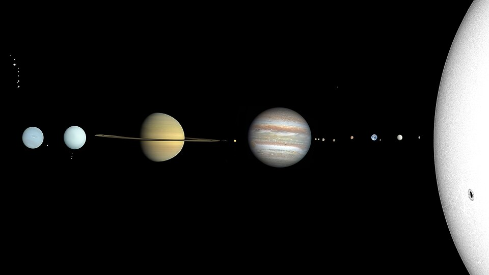
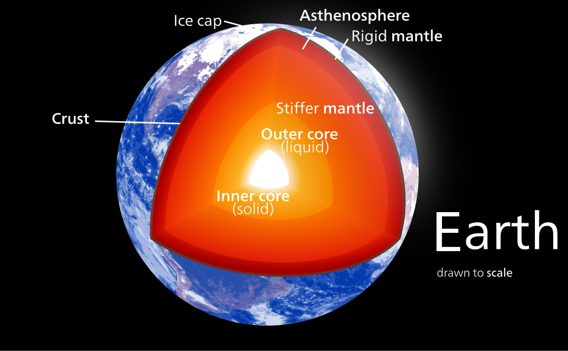
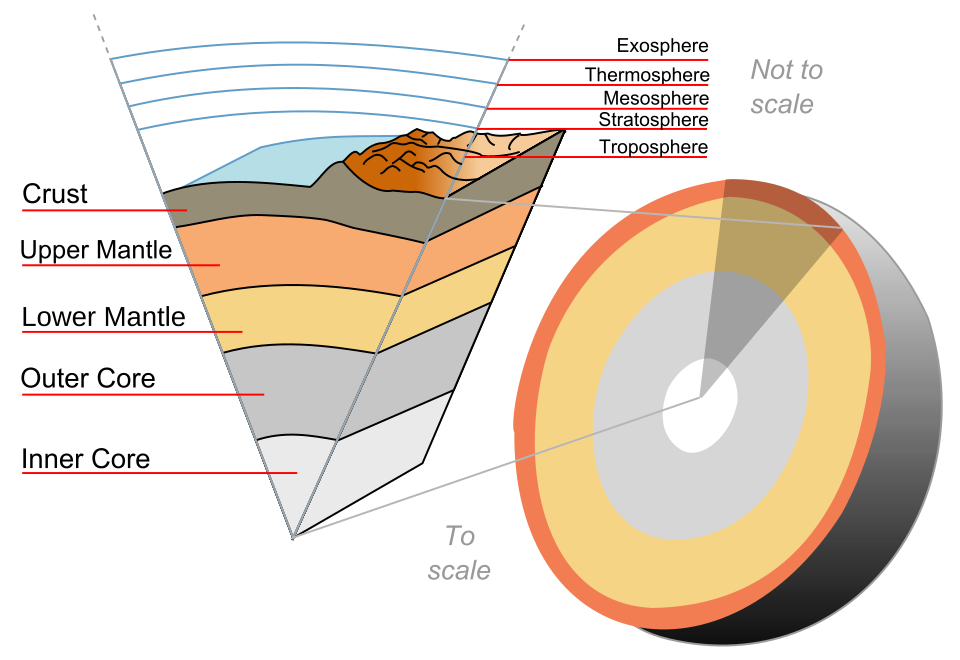
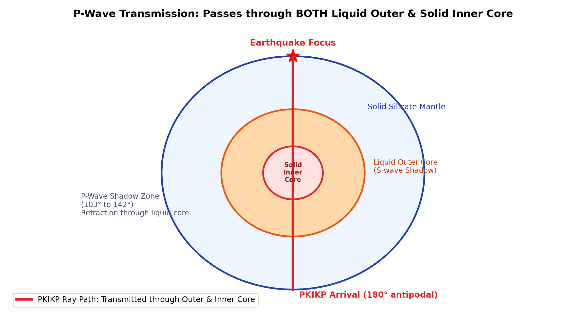
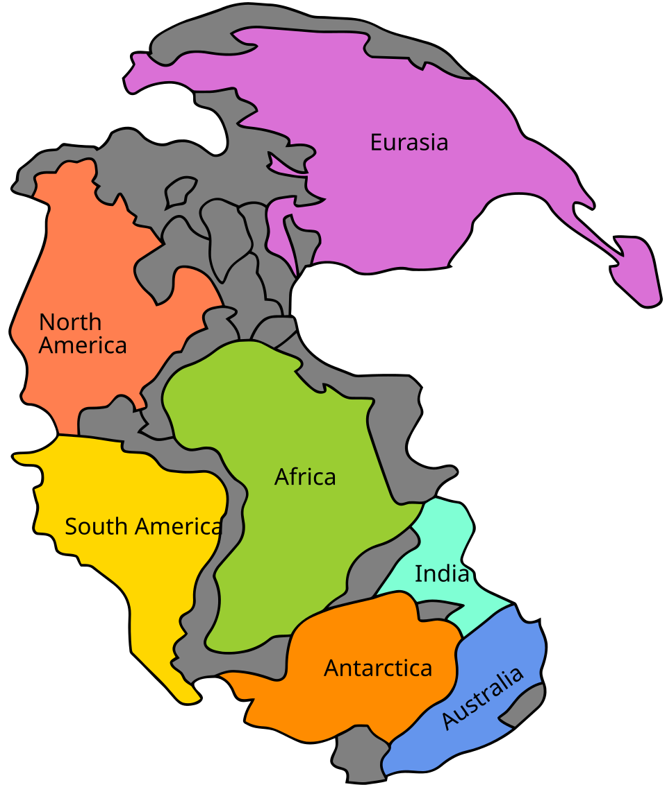
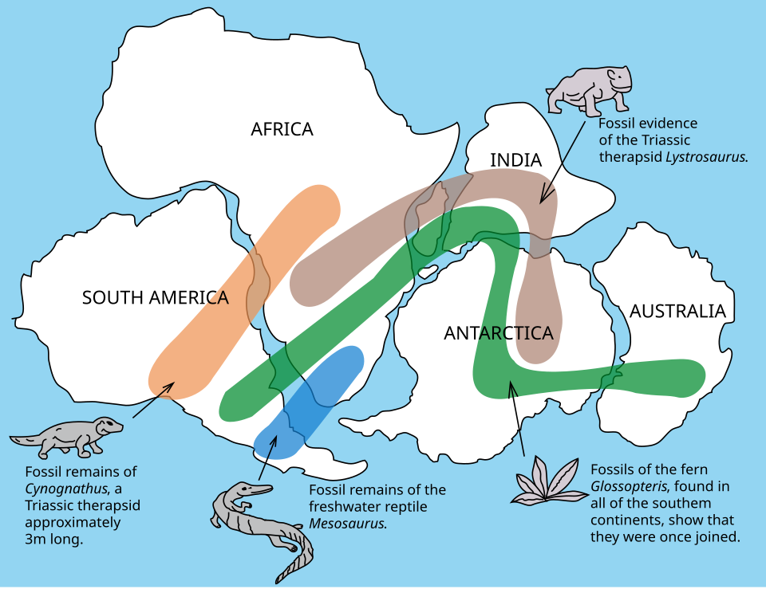
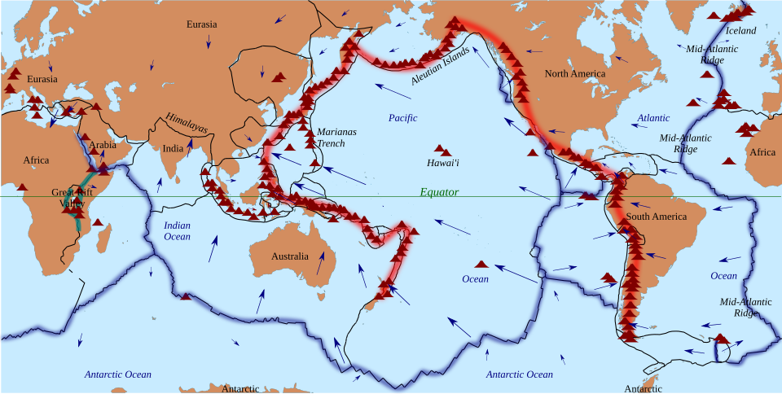
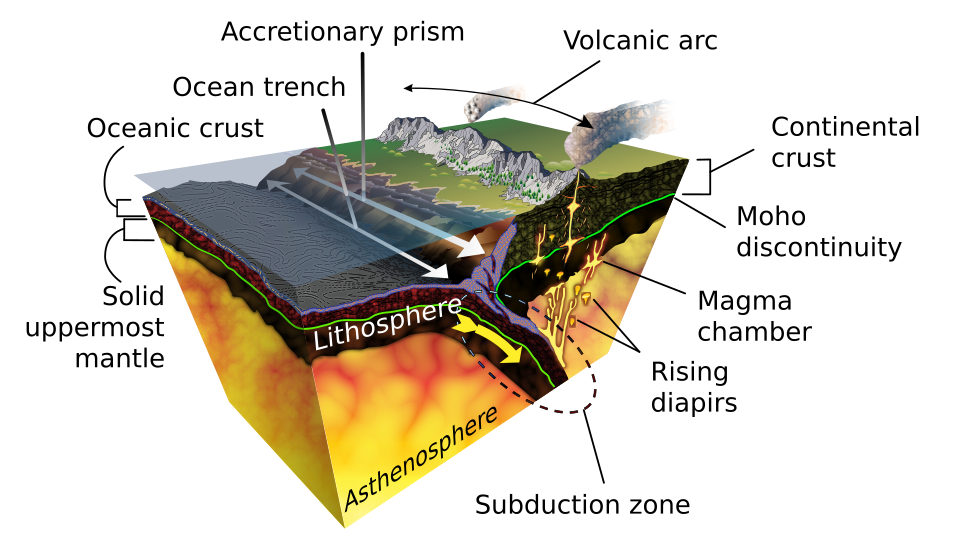

1.1 Science of Geology
Geology. Geology is the science devoted to the study of the Earth. It deals with all the features of the Earth's surface and with the origin, composition, structure, and inhabitants of the Earth.
1.1.1 Branches of Geology
The field of geology is very large and is divided into several specialized branches:
(i) Physical Geology. Physical geology is concerned with the work of natural processes that bring about changes upon the Earth's surface (such as weathering, running water, wind, glaciers, oceans, earthquakes, and volcanoes).
(ii) Petrology. The study of the different kinds of rocks is known as petrology. It deals with the composition, texture, structure, and origin of igneous, sedimentary, and metamorphic rocks.
(iii) Mineralogy. Mineralogy includes the study of mineral composition, crystal structure, physical appearance, stability, occurrence, and mineral associations.
(iv) Structural Geology. This branch of geology deals with the study of the architecture and deformation structures of rocks in the Earth's crust, such as folds, faults, joints, and unconformities.
(v) Stratigraphy. Stratigraphy is the science of the description, correlation, and chronological classification of strata in sedimentary rocks, including the interpretation of their depositional environments.
(vi) Palaeontology. Palaeontology is the science of fossils of ancient life forms preserved in rocks and their evolutionary history.
(vii) Historical Geology. The combined study of stratigraphy and palaeontology is included under historical geology. It reconstructs the distribution of land and seas, ancient climates, and life of past geological eras.
(viii) Economic Geology. Economic geology deals with the study of metallic ores, industrial minerals, and fossil fuels (coal, petroleum, and natural gas) of commercial importance.
(ix) Mining Geology. This branch is concerned with the application of geological principles to mineral exploration, reserve estimation, and mining engineering operations.
(x) Engineering Geology. Engineering geology applies geological knowledge to the safe, economical planning, design, and construction of civil engineering works.
1.1.2 Scope of Geology
Geology is of immense practical importance to mankind. It plays a vital role in locating coal, petroleum, atomic fuels, metallic ores, and industrial minerals. In civil engineering, major projects such as water supply schemes, dams, reservoirs, tunnels, bridges, highways, and landslide stabilization require thorough geological investigation and advice.
1.2 Solar System

The Earth is a planet and a member of the solar system. The Sun and the planets revolving around it in elliptical orbits constitute the solar system. In order of increasing distance from the Sun, the planets are Mercury, Venus, Earth, Mars, Jupiter, Saturn, Uranus, Neptune (and the dwarf planet Pluto). Nearly 99.85% of the total mass of the solar system is concentrated in the Sun, while the planets account for the remaining 0.15%. Based on location and physical character, the planets fall into two groups: (i) Inner (Terrestrial) Planets (Mercury, Venus, Earth, and Mars) and (ii) Outer (Jovian) Planets (Jupiter, Saturn, Uranus, and Neptune).
Size, Density, and Composition. The inner planets are relatively small and dense (mean density $4 \times 10^3\text{ kg/m}^3$ or higher, composed of silicates and metallic iron-nickel cores). In contrast, the outer planets are giant bodies of low density (Saturn has a density lower than water) composed largely of light volatile substances such as hydrogen, helium, water, ammonia, and methane. Mercury, being closest to the Sun, has the fastest orbital speed ($48\text{ km/s}$) and shortest year ($88\text{ days}$).
1.3 Origin of the Earth
Theories concerning the origin of the solar system and Earth fall into two broad categories: (i) Evolutionary Theories, which propose that planets formed naturally during the evolution of the Sun (e.g., Nebular Hypothesis), and (ii) Catastrophic Theories, which invoke a special cosmic accident such as the close encounter or collision of two stars (e.g., Planetesimal and Gaseous Tidal Hypotheses).
1.3.1 Nebular Hypothesis (Kant & Laplace)
Put forward by Immanuel Kant (1755) and Pierre-Simon Laplace (1796), this theory postulates that the solar system originated from a vast, hot, slowly rotating gaseous cloud called a nebula. As the nebula cooled and contracted, its rotational speed increased to conserve angular momentum. When centrifugal force at the equator exceeded gravitational attraction, concentric rings of gas detached successively and condensed into the planets, while the central core formed the Sun.
1.3.2 Planetesimal Hypothesis (Chamberlin & Moulton)
Proposed by T. C. Chamberlin and F. R. Moulton (1904), this hypothesis suggests that a passing star approached close to the Sun, raising huge tidal bulges and ejecting streams of solar gas. This ejected material cooled rapidly into small solid bodies called planetesimals, which subsequently collided and coalesced under gravity to build the planets.
1.3.3 Gaseous Tidal Hypothesis (Jeans & Jeffreys)
Proposed by Sir James Jeans and Harold Jeffreys (1919), this model envisions a passing star pulling out a cigar-shaped filament of hot gas from the Sun. The filament fragmented into condensations—thickest in the middle (forming giant Jupiter and Saturn) and tapering at both ends (forming smaller inner and outer planets).
1.3.4 Binary Star & Gas-Dust Cloud Hypotheses
H. N. Russell (1937) proposed that the Sun originally had a binary companion star that was disrupted by a passing star. Later modern theories (Otto Schmidt's Interstellar Dust Hypothesis and C. F. von Weizsäcker's Protoplanet Hypothesis) explain planetary accretion from a cold rotating protoplanetary disk of gas and cosmic dust around the young Sun.
1.4 Age of the Earth
Early attempts to estimate the age of the Earth relied on non-radiometric geological and physical rates:
1.4.1 From History of Organic Evolution. Estimating the time required for life to evolve from primitive unicellular organisms to modern mammals (~1,000 million years).
1.4.2 From Rate of Sedimentation. Dividing the maximum cumulative thickness of sedimentary strata by average annual deposition rates (~500 million years; unreliable due to unconformities and compaction).
1.4.3 From Salinity of Sea Water (Joly's Method). Dividing total sodium chloride dissolved in the oceans by annual river sodium input (~100 million years; underestimates true age because salt is recycled).
1.4.4 From Rate of Cooling (Lord Kelvin). Calculating the cooling time of an initially molten Earth (~20–40 million years; erroneous because Kelvin did not know about internal radioactive heating).
1.5 Radiometric Dating

$$N(t) = N_0 e^{-\lambda t} \implies t = \frac{1}{\lambda} \ln\left(1 + \frac{D}{P}\right)$$
where $P$ = remaining parent atoms, $D$ = radiogenic daughter atoms produced, and $\lambda = \frac{\ln 2}{t_{1/2}}$ is the decay constant (e.g., $\text{U}^{238} \to \text{Pb}^{206}$, $t_{1/2} = 4.47\text{ Ga}$; $\text{K}^{40} \to \text{Ar}^{40}$, $t_{1/2} = 1.25\text{ Ga}$).
Radiometric dating provides the most accurate numerical ages for rocks and the Earth. Radioactive parent isotopes decay spontaneously at a constant, unalterable rate (measured by their half-life) into stable daughter isotopes, independent of temperature, pressure, or chemical environment.
1.6 Common Radiometric Methods
1.6.1 Potassium-Argon ($\text{K}^{40}\text{--}\text{Ar}^{40}$) Method. Useful for dating micas, hornblende, and volcanic rocks ($t_{1/2} = 1.25\text{ billion years}$); applicable from ~100,000 years to over 4 billion years.
1.6.2 Rubidium-Strontium ($\text{Rb}^{87}\text{--}\text{Sr}^{87}$) Method. Ideal for ancient granitic and metamorphic rocks ($t_{1/2} = 48.8\text{ billion years}$).
1.6.3 Uranium-Lead ($\text{U}^{238}\text{--}\text{Pb}^{206}$ & $\text{U}^{235}\text{--}\text{Pb}^{207}$) Method. Applied to accessory zircon and uraninite crystals; yields the age of the oldest terrestrial rocks (~4.0 Ga) and meteorites/Earth (~4.54 billion years).
1.6.4 Radiocarbon ($\text{C}^{14}$) Method. Used by archaeologists and Quaternary geologists to date organic remains (wood, bone, charcoal, peat) up to ~50,000 years old ($t_{1/2} = 5,730\text{ years}$).
1.7 Interior of the Earth




Direct observation of the Earth's interior is limited to shallow mines and boreholes (~12 km). Our knowledge of the deep interior comes primarily from the study of seismic P-waves and S-waves generated by earthquakes. Wave velocities change abruptly at major seismic discontinuities, dividing the Earth into three concentric shells:
- PREM Seismic Discontinuities: Beneath the Mohorovičić Discontinuity (Moho) ($V_p$ jumps from $6.8$ to $8.1\text{ km/s}$), the upper mantle undergoes olivine-to-spinel ($410\text{ km}$) and spinel-to-perovskite ($660\text{ km}$) phase transitions before reaching the Gutenberg Core-Mantle Boundary ($2,900\text{ km}$, where $V_s$ drops to $0$) and Lehmann Inner-Core Boundary ($5,150\text{ km}$).
- Rheological vs. Compositional Layering: The Lithosphere (crust + rigid uppermost mantle, $0\text{--}100\text{ km}$) behaves elastically/brittlely over geological timescales, whereas the underlying Asthenosphere ($100\text{--}250\text{ km}$, Low-Velocity Zone) flows plastically by solid-state dislocation creep.
- Geothermal Gradient & Plate Driving Forces: Continental crustal geotherms average $25\text{--}30^\circ\text{C/km}$ near the surface. Lithospheric plates are driven primarily by Slab Pull (negative buoyancy of cold subducting oceanic lithosphere) assisted by Ridge Push.
1.7.1 Crust. The outermost solid shell extending down to the Mohorovicic (Moho) Discontinuity. Continental crust is 30–40 km thick (up to 70 km beneath mountain belts), granitic in composition (SIAL, density $2.7\text{ g/cm}^3$). Oceanic crust is thinner (5–10 km), basaltic in composition (SIMA, density $3.0\text{ g/cm}^3$).
1.7.2 Mantle. Extends from the Moho down to the Gutenberg Discontinuity at 2,900 km depth, comprising ~83% of Earth's volume. Composed of dense ultramafic magnesium-iron silicates (peridotite). The upper mantle contains a ductile, partially molten Asthenosphere (100–250 km depth) over which the rigid Lithosphere plates move.
1.7.3 Core. Extends from 2,900 km to the Earth's center (6,371 km). Composed of metallic iron-nickel alloy (NIFE, density $10\text{--}13\text{ g/cm}^3$). Because shear S-waves are completely stopped at 2,900 km, the Outer Core (2,900–5,150 km) is liquid, whereas the Inner Core (5,150–6,371 km) is solid due to immense confining pressure.
1.8 Isostasy

$$t = \frac{h \cdot \rho_c}{\rho_m - \rho_c} \approx 4.24\,h$$
Under Pratt's model (constant compensation depth $D \approx 100\text{ km}$), $\rho_i \cdot H_i = \text{constant}$.
Isostasy is the state of gravitational equilibrium between the Earth's lithosphere and underlying asthenosphere, such that crustal blocks float at elevations proportional to their thickness and density.
1.8.1 Pratt's Hypothesis (1859). Assumes a uniform depth of compensation (~100 km) beneath which pressure is equal everywhere. Higher mountains consist of lighter (lower-density) rocks, while ocean basins are underlain by heavier (higher-density) rocks.
1.8.2 Airy's Hypothesis (1855). Assumes all crustal blocks have the same density, but mountains stand higher because they have deep, buoyant crustal roots projecting downward into the denser mantle—just like icebergs floating in water.
1.8.3 Evidences of Isostasy. Proven by post-glacial rebound in Scandinavia and North America following the melting of Pleistocene ice sheets, as well as Bouguer gravity anomalies over the Himalayas.
1.9 Continental Drift


Proposed by Alfred Wegener (1912), the Continental Drift Theory states that all present continents were once united into a single supercontinent called Pangaea, surrounded by a vast primeval ocean called Panthalassa. During the Mesozoic Era, Pangaea split into a northern landmass (Laurasia) and a southern landmass (Gondwanaland), separated by the Tethys Sea.
Evidences for Gondwanaland & Laurasia (1.10–1.13): (i) Jigsaw-puzzle coastline fit between South America and Africa; (ii) Continuity of Precambrian-Palaeozoic orogenic belts across oceans; (iii) Late Palaeozoic (Permo-Carboniferous) glacial tillites across India (Talchir), South America, Africa, Australia, and Antarctica; (iv) Identical Glossopteris plant fossils and terrestrial reptiles (Mesosaurus, Lystrosaurus); and (v) Paleomagnetic apparent polar wandering curves. India drifted rapidly northward after breaking from Gondwanaland to collide with Eurasia, uplifting the Himalayas.
1.14 Plate Tectonics & Sea-Floor Spreading




Plate Tectonics is the unifying modern theory stating that the rigid outer lithosphere is broken into ~7 major and several minor plates (Eurasian, Indian-Australian, Pacific, North American, South American, African, Antarctic) that glide over the plastic asthenosphere at rates of 2–10 cm/year, driven by mantle thermal convection currents (Arthur Holmes).
1. Divergent (Constructive) Boundaries. Plates pull apart at mid-oceanic ridges, where upwelling basaltic magma creates new oceanic crust (sea-floor spreading, Harry Hess, 1962), evidenced by symmetrical magnetic reversal stripes and young ocean-floor ages.
2. Convergent (Destructive) Boundaries. Plates collide. Where an oceanic plate subducts beneath a continental or oceanic plate, deep-sea trenches, Benioff-zone earthquakes, and volcanic arcs form. Continent-continent collision produces fold mountain belts such as the Himalayas.
3. Transform (Conservative) Boundaries. Plates slide horizontally past one another along major transform faults (e.g., San Andreas Fault) without creating or destroying crust.
Chapter Review Questions (K. M. Bangar)
1. Define geology and describe its major branches and practical scope in civil engineering.
2. Describe the radioactive methods for dating the Earth. How old is the Earth according to these estimates, and why is radiometric dating the most reliable method?
3. Give an account of the internal constitution of the Earth with neat diagrams, highlighting the Crust, Mantle, Core, and major seismic discontinuities.
4. Explain the concept of Isostasy and compare Pratt's and Airy's hypotheses.
5. Discuss the theory of Continental Drift and Plate Tectonics. Describe the three types of plate boundaries and the evidences supporting sea-floor spreading.
Supplementary Visual Reference Gallery
Additional high-resolution global tectonic and geothermal reference diagrams supporting Chapter 1 (all primary figures are placed inline with their matching sections above).